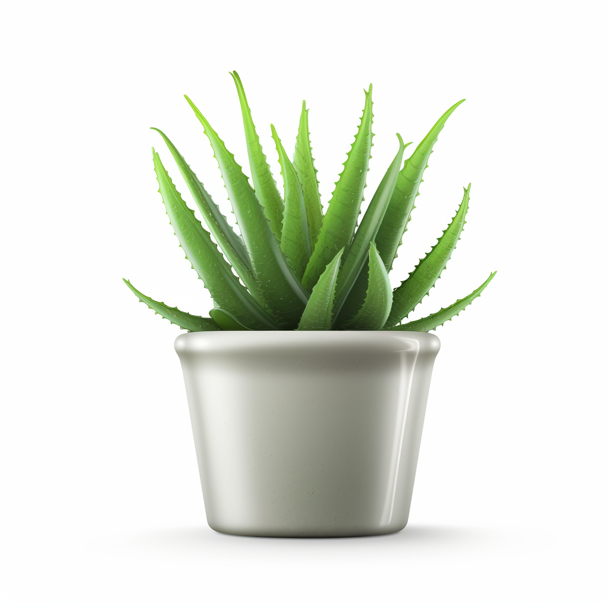

<ion-tabs>
  <ion-tab-bar slot="bottom">
    
    <ion-tab-button tab="scoreboard">
      <ion-icon name="bar-chart-outline"></ion-icon> 
    </ion-tab-button>

    <ion-tab-button tab="fight">
      <ion-icon name="search-outline"></ion-icon> 
    </ion-tab-button> 
    
    <ion-tab-button tab="plant"> 
      <ion-avatar>
        
      </ion-avatar>
    </ion-tab-button>

    <ion-tab-button tab="notifications"> 
      <ion-icon name="notifications-outline"></ion-icon>
      <ion-badge *ngIf="notifications" id="notification-badge"></ion-badge> 
    </ion-tab-button>

    <ion-tab-button tab="settings"> 
      <ion-icon name="settings-outline"></ion-icon>  
    </ion-tab-button>

  </ion-tab-bar>
</ion-tabs>